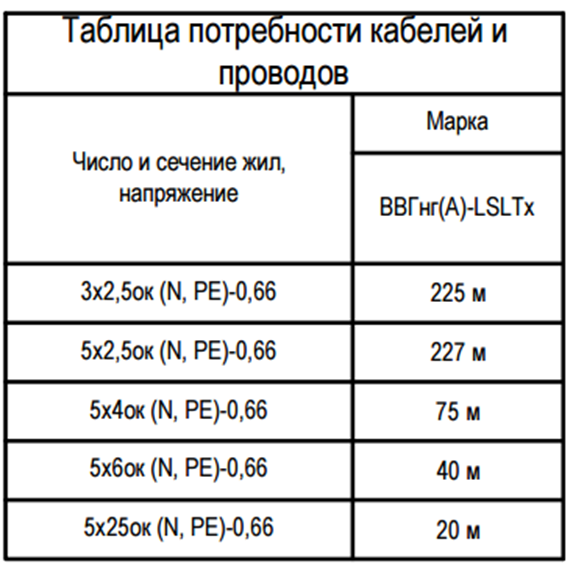
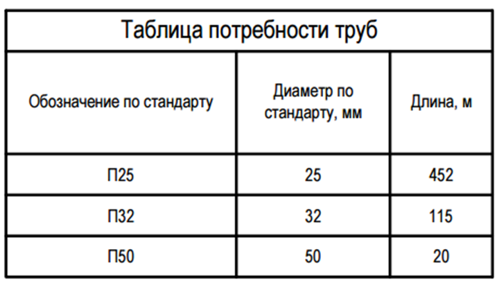
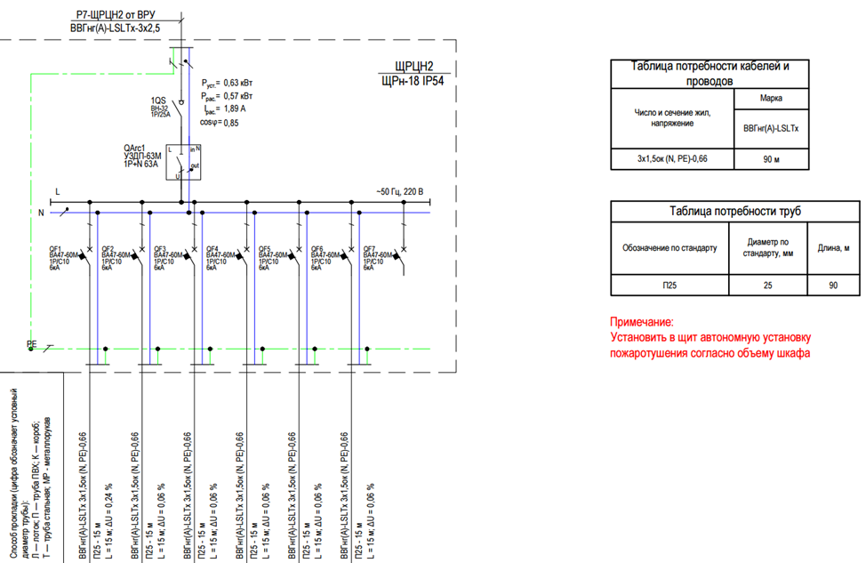
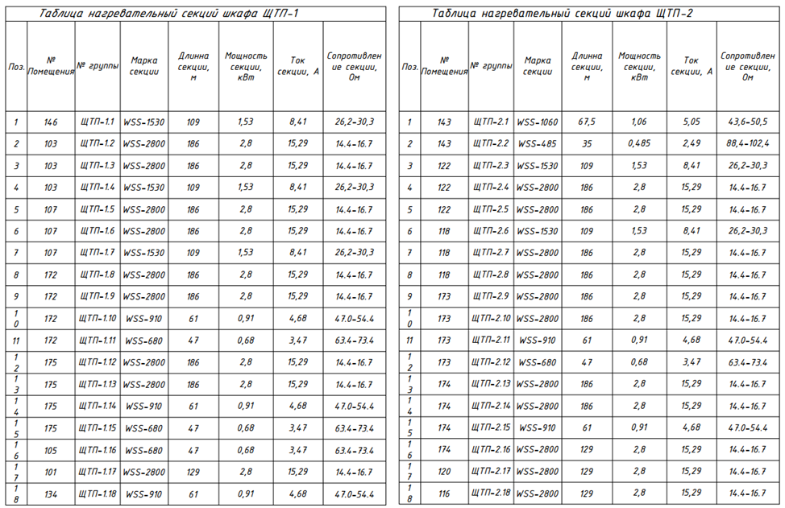
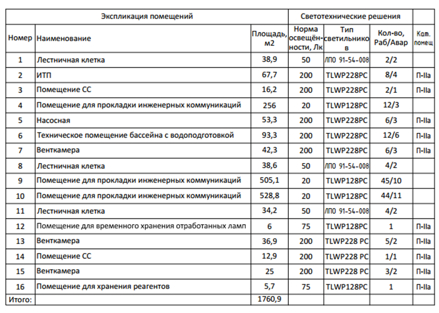

Роль и место спецификаций в проектной документации

Проектирование внутренних сетей электроснабжения – это не только расчеты и чертежи. Финальным и определяющим этапом, от которого зависит успешная реализация проекта, является корректное оформление спецификаций, ведомостей и организация согласований. На этом этапе формируется документация, по которой осуществляется закупка материалов и оборудования, а также производство работ. От ее точности и полноты зависит более 80% успеха согласований и отсутствия вопросов в дальнейшем.
На этапе проектной документации ведомости, журналы и спецификации, как правило, не предоставляются. Они появляются позже, при разработке рабочей документации (РД). Именно в РД содержится вся информация, необходимая для заказа материалов, монтажа и согласований.
Одним из ключевых документов, который обычно прикрепляется к проекту, является таблица расчета электрических нагрузок. В ней отражаются основные сведения, необходимые для подключения объекта к электрическим сетям. Эта таблица является базовой для дальнейшего формирования спецификаций. На видео можно рассмотреть наглядное представление таблицы.

Таблицы в составе рабочей документации ЭОМ
Рабочая документация включает ряд обязательных таблиц, каждая из которых решает конкретную задачу. Рассмотрим их подробно.
Таблица потребности кабелей и проводов
Эта таблица формируется на основе принципиальных и монтажных схем. В ней указывается:
- тип кабеля или провода (например, ВВГнг-LS, ПВ-3);
- сечение и количество жил;
- общая длина с учетом запаса.
Длина указывается с запасом 10-15%, что обусловлено необходимостью учёта поворотов, подрезки и непредвиденных расходов. Данные в таблице должны быть точными и проверенными по модели и чертежам.

Таблица потребности труб
В этой таблице указываются:
- тип труб (металлические, ПВХ, гофрированные);
- диаметр;
- длина.

Если таблица прилагается к схеме на чертеже, ее размещают непосредственно на листе, что улучшает читаемость и удобство использования монтажниками. Пример такого расположения смотрите на картинке:

Таблица нагревательных секций шкафа
Применяется для объектов, где требуется поддержание температурного режима в электрощитовых помещениях или шкафах.
В таблице указываются:
- марка нагревательной секции;
- мощность, ток и сопротивление секции;
- длина;
- места установки.
Этот документ важен для обеспечения нормативных условий эксплуатации оборудования.

Таблица светотехнических решений
Ее часто совмещают для удобства с основной экспликацией помещений, чтобы не было дублирования информации и наглядно было понятно, где какой светильник и какое их количество требуется.
В таблице указываются:
- тип светильника;
- количество;
- норма освещенности;
- место установки;
- категория помещения.
Такой подход позволяет согласовать освещение с архитектурными и дизайнерскими решениями.

Спецификация оборудования и материалов
Это основной документ для закупки. Спецификация формируется в соответствии с ГОСТ 21.110-2013 и включает:
- позиционное обозначение;
- наименование оборудования или материала;
- марку, тип или модель;
- единицу измерения;
- количество.

Спецификация должна быть детализированной. Вместо общих формулировок указываются конкретные артикулы, производители и технические характеристики.
Кабельный журнал
Журнал содержит информацию о каждом кабеле:
- обозначение;
- марка и сечение;
- длина;
- точки начала и окончания;
- трасса прокладки.

Кабельный журнал необходим для монтажа, пусконаладки и дальнейшей эксплуатации.
Формирование спецификации в Revit согласно ГОСТ 21.110-2013
В Revit спецификация является динамическим отчетом, который формируется на основе модели. Для корректного оформления необходимо выполнить следующие шаги.
Структура спецификации
Согласно ГОСТ, спецификация должна быть разделена на разделы. В Revit это реализуется через настройки сортировки и группировки.
Рекомендуемый порядок разделов:
- Оборудование (трансформаторы, ДГУ, ИБП).
- Низковольтные комплектные устройства (ГРЩ, ВРУ, ЩР).
- Аппараты защиты (автоматические выключатели, УЗО).
- Кабельные изделия.
- Электромонтажные изделия (лотки, трубы, коробки).
- Светотехнические изделия.
Настройка полей спецификации
Во вкладке «Вид» → «Ведомости» → «Спецификация» необходимо добавить обязательные поля, используя параметры ADSK:
- ADSK_Позиция - порядковый номер.
- ADSK_Наименование - полное название изделия.
- ADSK_Марка - марка или тип.
- ADSK_Код_изделия - артикул производителя.
- ADSK_Завод_изготовитель - название производителя.
- ADSK_Единица_измерения - единицы измерения (м, шт, кг).
- ADSK_Количество - количество с учётом запаса.
- ADSK_Масса - масса единицы изделия.
Как согласовать проект внутри организации
Проект никогда не живет в вакууме. Его нужно согласовать со смежными отделами. Давайте подробнее рассмотрим какие есть внутренние согласования:
- с архитекторами: габариты и места установки щитов, трассы вертикальных кабельных шахт, проходки через перекрытия. Ваши главные инструменты в данной работе – это планы расположения электрооборудования, наложенные на архитектурный план, а также проверка коллизий в Revit и Navisworks.
- с ОВиК: исключение прокладки кабелей рядом с горячими трубопроводами.
- с ВК: исключение трасс под трубопроводами.
- с КМиКЖ: согласование закладных деталей для крепления оборудования.
Рекомендуется использовать журнал рассылки или систему комментариев в BIM-модели для фиксации договоренностей.
Практическая часть
Ваша задача – выбрать правильные параметры ADSK, чтобы заполнить поле спецификации в Revit.